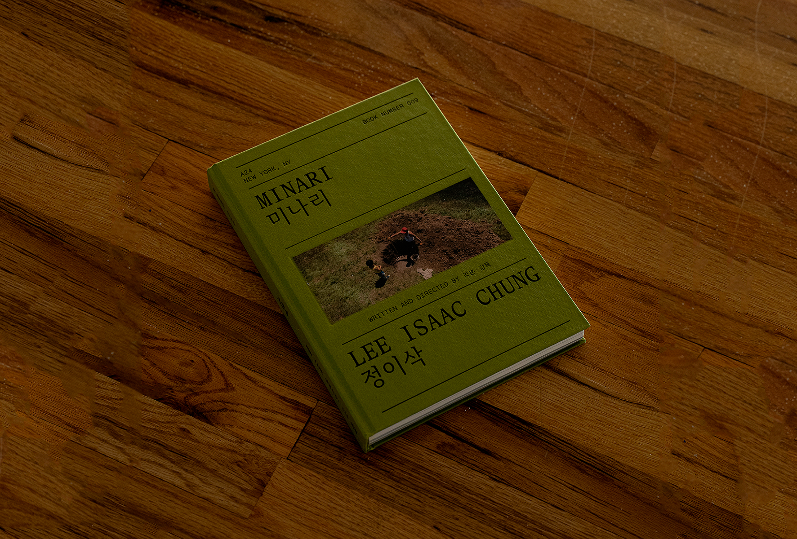
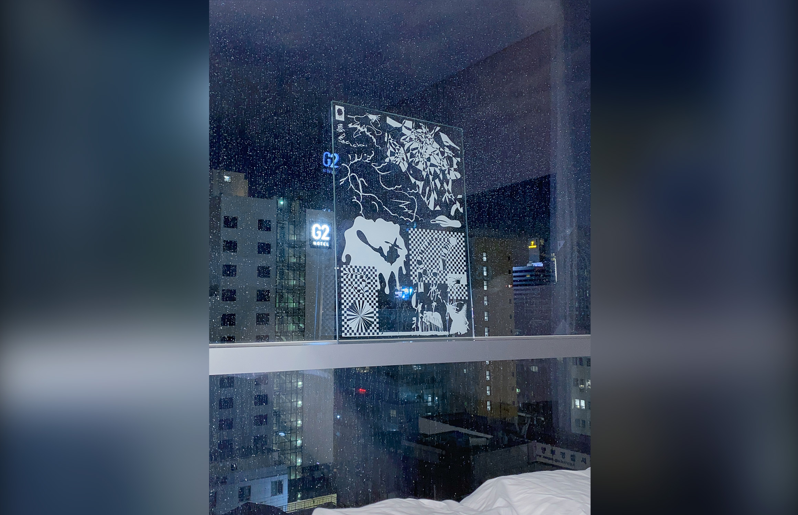

Caption for Image Caption for Image Caption for Image Caption for Image Caption for Image Caption for Image 1
Caption for Image Caption for Image Caption for Image Caption for Image Caption for Image Caption for Image 1Minari Screenplay Book
8″ x 11″ 320 pages, 2022. Designed in collaboration with Actual Source. Commissioned by A24.
An older (medieval) convention is the manicule (pointing hand, 👈). Pedro Reinel in c. 1504 first used the fleur-de-lis as indicating north in a compass rose; the convention of marking the eastern direction with a cross is older (medieval).[2] Use of the arrow symbol does not appear to pre-date the 18th century. An early arrow symbol is found in an illustration of Bernard Forest de Bélidor's treatise L'architecture hydraulique, printed in France in 1737. The arrow is here used to illustrate the direction of the flow of water and of the water wheel's rotation. At about the same time, arrow symbols were used to indicate the flow of rivers in maps.[3]
Caption for Image 2Caption for Image 2
Caption for Image 1Caption for Image 2Caption for Image 2
Caption for Image 1Caption for Image 2
Caption for Image 1Caption for Image 2
Caption for Image 1Caption for Image 2
Caption for Image 1Caption for Image 2Caption for Image 2
Caption for Image 1Caption for Image 2Caption for Image 2Caption for Image 2Caption for Image 2
Caption for Image 1Caption for Image 1

Caption for Image 2
Caption for Image 1Caption for Image 2Caption for Image 2